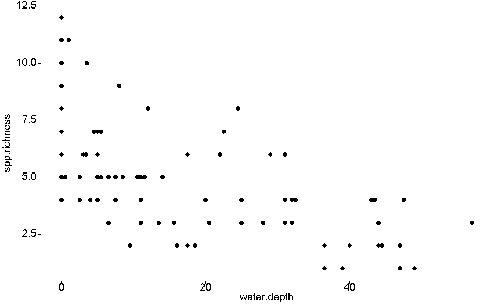
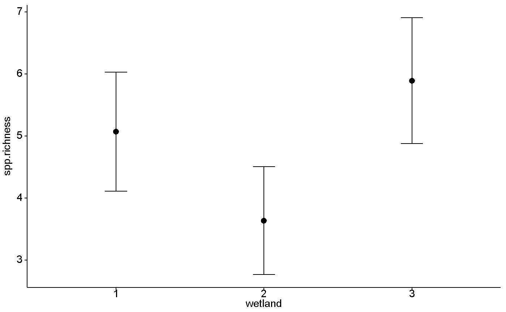

Data are the number of species observed in a 0.25 m^2 plot. The original data include the number of stems and percentage cover of each species within the sampling plot. Data collected by Gerry Koza (koz7133@calu.edu) in the summer 2017.
wetlands
A data frame with 78 rows and 5 variables:
Gameland
Wetland number. Can be 1 2 or3
Transect an plot designations
depth of water within sapling plot
The number of species observed within the sampling plot
data(wetlands) library(ggplot2) library(ggpubr) ## Species richness versus water depth ggscatter(data = wetlands, y = "spp.richness", x = "water.depth")## Species richness by wetland ### Note that dataframe is "wetlands" with an "s" ### and the column name is "wetland", no "s" ggerrorplot(wetlands, y = "spp.richness", x = "wetland", desc_stat = "mean_ci", error.plot = "errorbar", add = "mean")